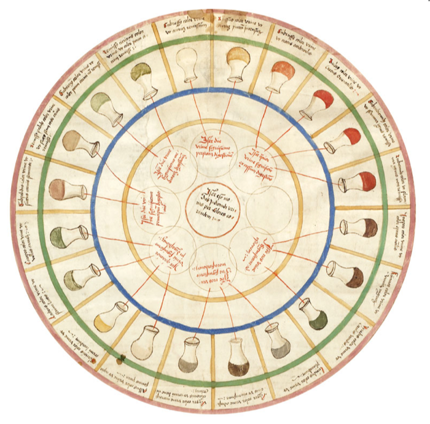
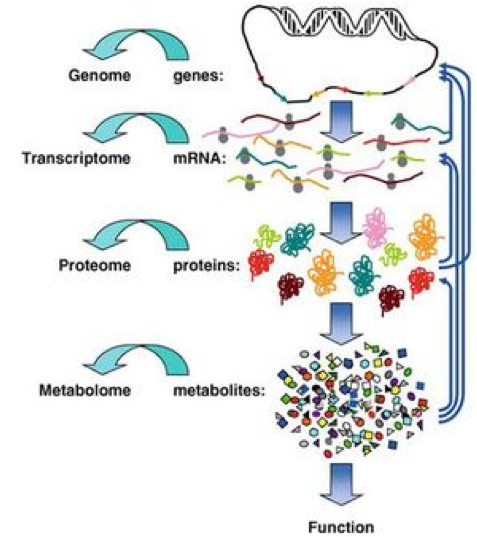
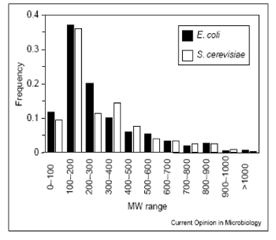
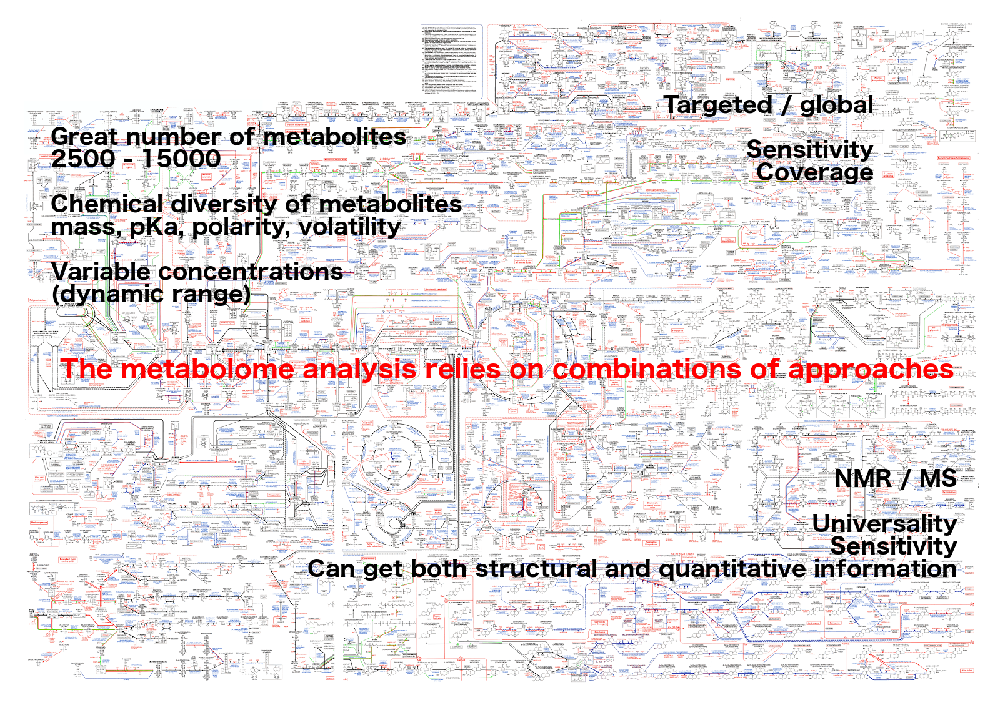
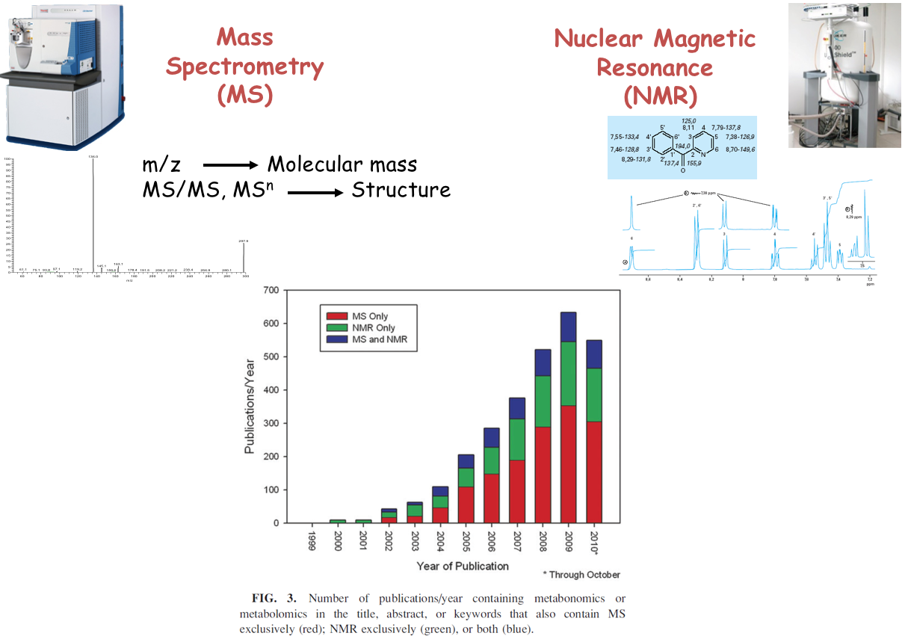
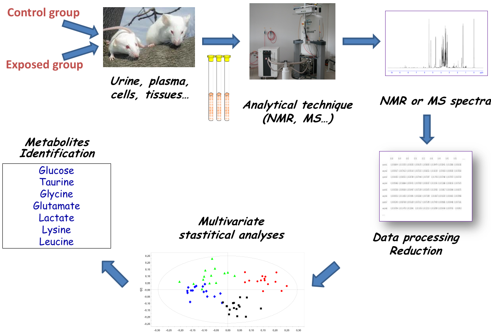
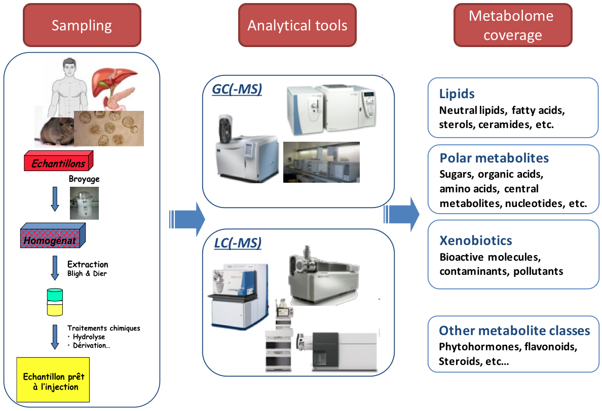

Introduction to Metabolomics
Contributors
Metabolomics
.pull-left[] .pull-right[]
«Quantitative measurement of the dynamic multiparametric metabolic response of living systems to pathophysiological stimuli or genetic modification » (Nicholson, 1999)
Definitions
- Metabolomics
- Newly emerging field of ‘omics’ research
- Comprehensive and simultaneous systematic determination of metabolite levels in the metabolome and their changes over time as a consequence of stimuli
- Metabolome
- Refers to the complete set of small-molecule metabolites
- Dynamic
- Metabolites
- Intermediates and products of metabolism
- Examples include antibiotics, pigments, carbohydrates, fatty acids and amino acids
- Primary and secondary metabolites
Definitions
.pull-left[ Metabolo l omics .left[ Metabolic ‘fingerprints’ (unique for each type of cell or tissue) based on comprehensive quantification
i.e. comprehensive and simultaneous systematic determination of metabolite levels in a biological system (cell, tissue, fluid) ]]
.pull-right[ Metabolo n omics .left[ Description of metabolic changes
i.e. detection of disrupted metabolic pathways ]]
Metabolomics : the world of small molecules
.pull-left[ Physico-chemical diversity
- Comparison with
- DNA/RNA: 4 bases
- Proteins: 20 amino acids
- Common physico-chemical properties
- Extraction/Analysis: easy automation
- Metabolites
- Number ≥ 150 000 in Nature; most not identified
- Wide diversity of structures, functional groups, physico-chemical properties
- e.g. lipids, sugars, amino acids, etc.
- High turn-over rates (<sec)
- Range from 1 pM to 100 mM ]
.pull-right[ Molecular mass range  80% of metabolites with mol. mass ≤ 600 (E. coli, S. cerevisiae) ]
Analytical challenge

Complementary analytical tools
For metabolome investigation

Strategy: untargeted metabolomics
or metabolic fingerprinting

Strategy: targeted metabolomics
Qualitative and quantitative analysis

Thank you!
This material is the result of a collaborative work. Thanks to the Galaxy Training Network and all the contributors! Tutorial Content is licensed under
Creative Commons Attribution 4.0 International License.
Tutorial Content is licensed under
Creative Commons Attribution 4.0 International License.